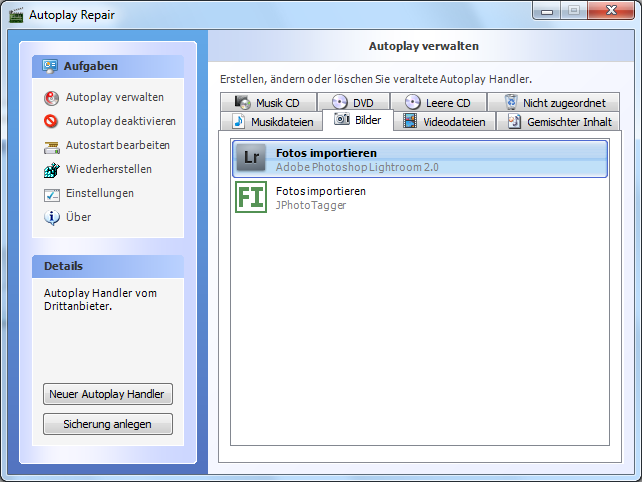
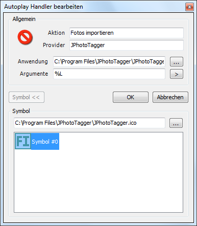
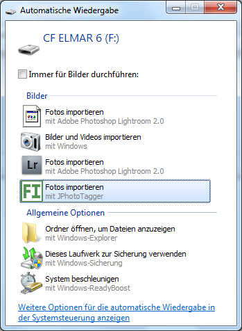
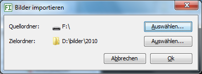

Importing images with Autoplay on Windows
If Autoplay is enabled in Windows, JPhotoTagger can automatically be started and importing image files, when You put Your camera's card into a card reader, which is connected to Your PC. I tested that under Windows 7:
- If not installed, download and install Autoplay Repair
- Create a batch file in JPhotoTagger's program
directory (Default:
C:\Program Files\JPhotoTagger\). You can use this (right click the link and choose "Save Target as...") and fit it to Your needs. It starts JPhotoTagger with the command line parameter-importand the drive letter of the camera card as argument:-import=%1where %1 will be automatically replaced by the drive letter. - Start Autoplay Repair and select the tab
Images (in the picture below that is the German
translation "Bilder")

-
Create a new entry (German translation on the picture below):
- Action (Aktion): Import images (Fotos importieren)
- Provider: JPhotoTagger
- Program (Anwendung): Path to the batch
file, e.g.
C:\Program Files\JPhotoTagger\JPhotoTaggerImport.bat - Arguments (Argumente): %L
- Icon (Symbol): Path to
JPhotoTagger.icoin JPhotoTagger's program directory, e.g.C:\Program Files\JPhotoTagger\JPhotoTagger.ico

After finishing creating the entry and inserting the camera card into a card reader, Windows should display an Autoplay dialog in that You can choose Import images with JPhotoTagger (Fotos importieren mit JPhotoTagger), such as in the picture below.

If You choose JPhotoTagger, it will start and display the import dialog, such as in the picture below.

Elmar Baumann, Status: 2010-02-17